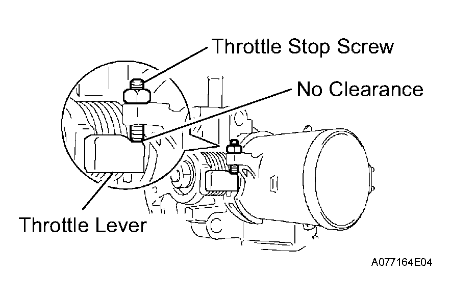

Throttle Body: Inspection
- INSPECT THROTTLE BODY ASSEMBLY
- Inspect that the throttle valve shaft is not rickety.
- Inspect that all ports are not clogged.
- Inspect that the throttle valve opens and closes smoothly.
- Inspect that there is no clearance between the throttle stop screw and throttle lever at throttle valve closed position.

Courtesy of © TOYOTA, LICENSE AGREEMENT TMS1002NOTE: Do not touch the throttle stop screw.